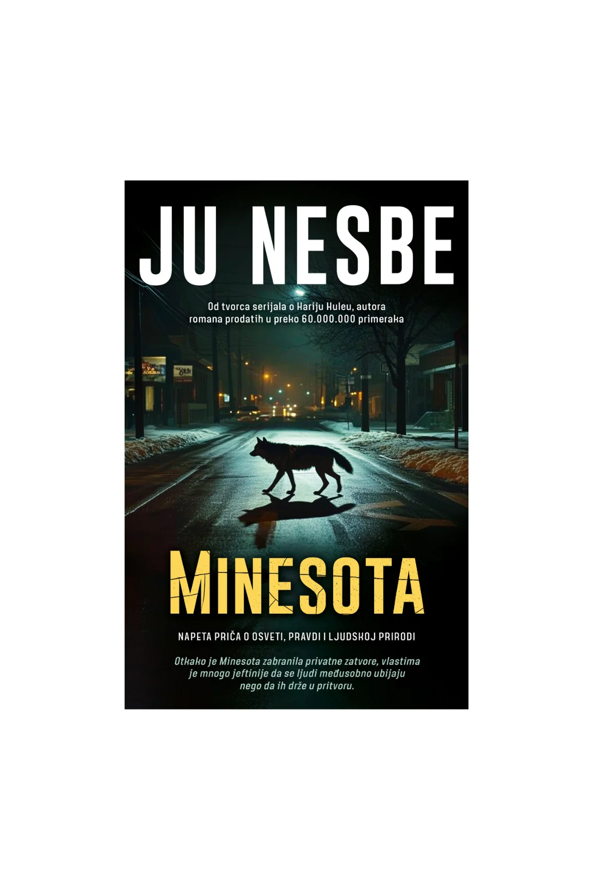
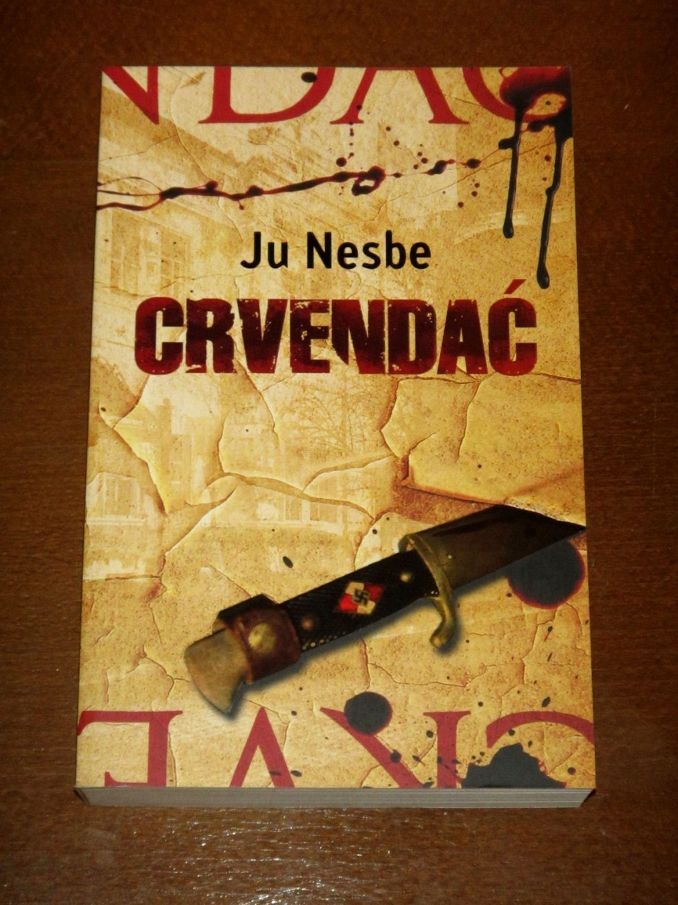
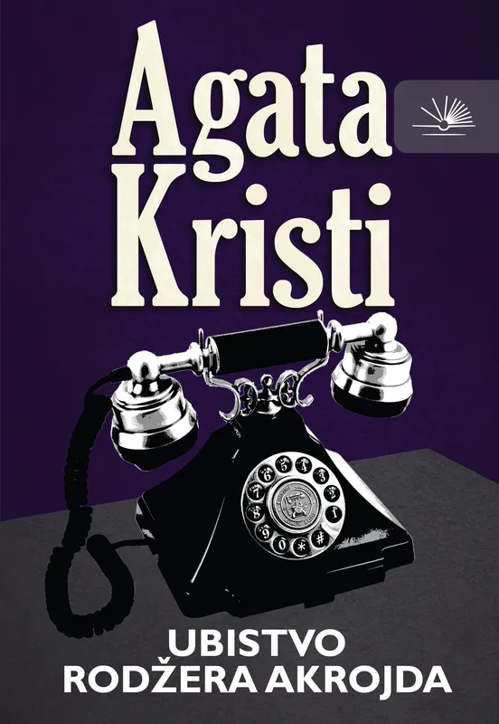
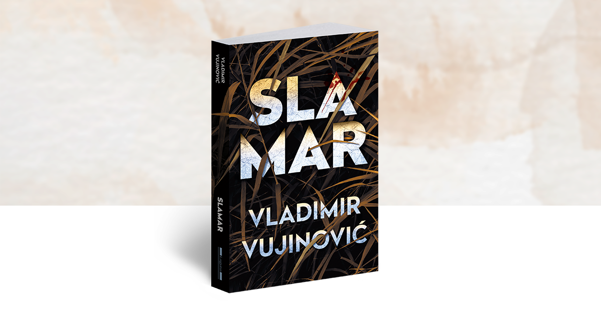
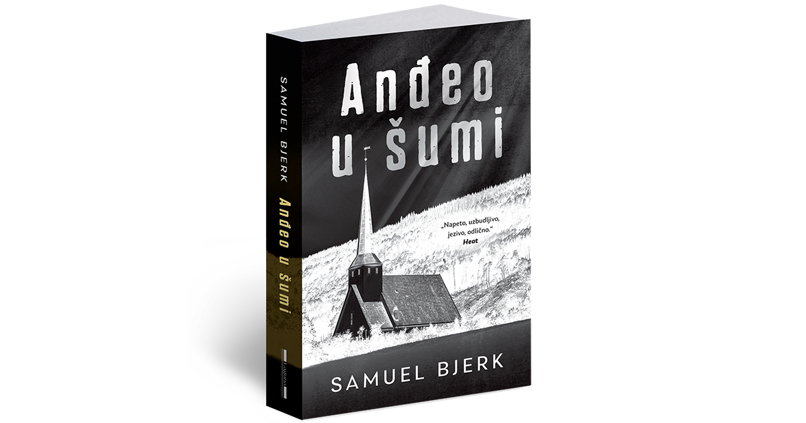

Добро дошли на сајт посвећен свету крими трилера и његових поджанрова. Овде ћемо истраживати развој овог жанра кроз различите епохе, пратећи кључне ауторе, карактеристике и стилске правце који су обележили сваку етапу.
Сајт је подељен на више целина. Први део обухвата историју жанра – од његових почетака до краја 20. века – са освртом на специфичности сваког периода и утицајне представнике. Затим следи анализа савремених крими трилера, са посебним акцентом на скандинавску, енглеску, америчку и друге регионалне сцене.
У завршном делу, фокус је на српским крими трилерима – мање познатом, али све утицајнијем делу продукције који бележи значајан успон и заслужује пажњу. Такође биће и речи о привом регионалном трилерфесту који је био и повод одабира ове теме.
Лого трилерфеста - првог регионалног фестивала о трилерима
Пре него што се упустите у сам садржај сајта ово су мојих пет омиљених крими трилера које сам прочитао у 2025. години.
    Пре него што почнете да истражујете сајт, окушајте се у једном изазову. Кликом на дугме добићете насумично одабран назив крими-романа који треба да прочитате.